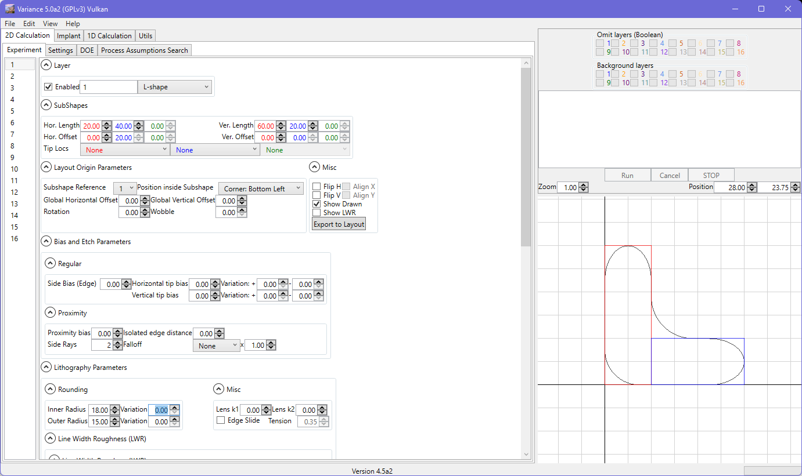
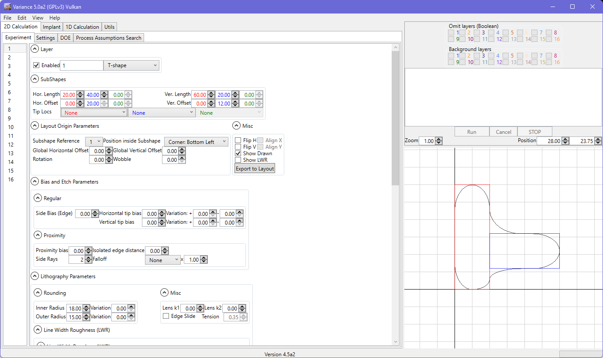
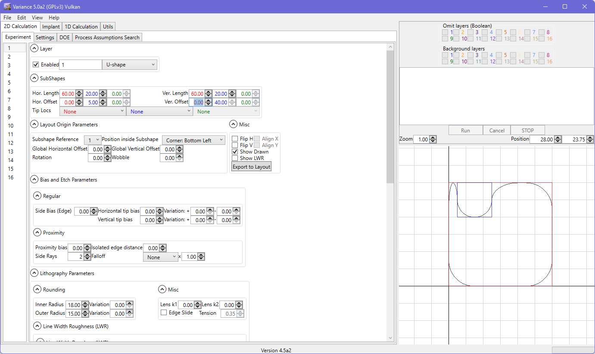
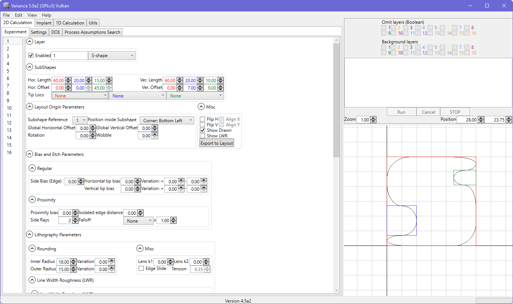

L-shape
The Subshape1 entity defines the vertical arm of the L. The Subshape2 entity defines the horizontal arm of the L, abutted to the bottom right corner of the vertical arm.

Sub-Shapes
Sub-shapes are the basic building blocks for shapes inside the tool. Each sub-shape is a rectangle (which is why the rectangle only has one sub-shape available to configure, and also one sub-shape reference). This is also why sub-shape inputs are not available for GDS or Oasis input.
If you select a complex shape, you will see the user interface offer a second sub-shape input box. The sub-shapes in the drawn mode are color-coded for easier identification.
In some cases, the Sub-shape 2 offsets may not be available (or only one may be exposed). This is a result of the shape configuration (e.g. for an L-shape, neither offset is available since the two sub-shapes must abut and a vertical offset would yield a T-shape).
L-shape
The Subshape1 entity defines the vertical arm of the L. The Subshape2 entity defines the horizontal arm of the L, abutted to the bottom right corner of the vertical arm.
T-shape
The Subshape1 entity defines the vertical arm of the T. The Subshape2 entity defines the horizontal arm of the T, abutted to the right edge of the vertical arm.

Cross-shape
The Subshape1 entity defines the vertical component of the cross. The Subshape2 entity defines the horizontal components of the cross.
U-shape
The Subshape1 entity defines the outer perimeter of the U. Subshape2 defines the notch that is cut into the Subshape1.

S-shape
The Subshape1 entity defines the outer perimeter of the S. Subshape2 defines the notch that is cut into the lower left of Subshape1. Subshape3 defines the notch that is cut into the upper right of Subshape1.
